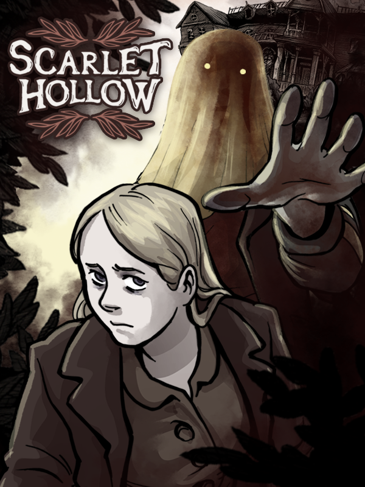

Scarlet Hollow
Scarlet Hollow
Details
|  | |
| Playtime | 18h 22m 0s |
| Last Activity | 2022-12-15 1:06:42 |
| Added | 2023-08-11 0:29:07 |
| Modified | 2025-10-02 10:12:39 |
| Completion Status | Completed |
| Library | Steam |
| Source | Steam |
| Platform | Macintosh PC (Linux) PC (Windows) |
| Release Date | 2021-06-11 |
| Community Score | 84 |
| Critic Score | |
| User Score | |
| Genre | Indie Point-and-click Role-playing (RPG) Visual Novel |
| Developer | Black Tabby Games |
| Publisher | Black Tabby Games |
| Feature | Single Player |
| Links | Official Website YouTube Discord Subreddit Steam Twitch Itch GOG Community Wiki |
| Tag | Adventure Choices Matter Choose Your Own Adventure Dark Fantasy Dark Humor Dating Sim Horror Interactive Fiction Lore-Rich Lovecraftian Multiple Endings Mystery Narrative Point & Click Psychological Horror RPG Story Rich Supernatural Visual Novel Well-Written |
Description
From the developers of Slay the Princess, Scarlet Hollow is an immersive horror-mystery with sharp writing, impactful choices, and meticulously hand-drawn art.

Coal mines sealed off after a deadly collapse. Strange creatures preying on livestock. Houses infested with vengeful spirits. The sleepy town of Scarlet Hollow has suddenly come alive with horrors, just in time for your arrival. This was supposed to be a quiet getaway in the rural mountains of North Carolina. All you had to do was finally meet your long-lost cousin and comfort her through her mother’s funeral. But now, each new day welcomes new nightmares.
You only have to survive a week. But can you get to the bottom of the horrifying mysteries haunting Scarlet Hollow before they claim your life?
Scarlet Hollow is being released across seven episodes. The first FOUR are available now for you to play, with the remaining episodes to follow as free updates as we finish them.
Features
A heavily branching narrative where your decisions (actually) matter. The relationships you forge and the decisions you make will dramatically alter your journey.
A complex paranormal mystery. Investigate haunted houses, strange sightings in the woods, a deteriorating mine, and more as you try and piece together what happened in Scarlet Hollow.
Trait-based dialogue and role-playing. Scarlet Hollow's dialogue system is driven by role-playing elements that let you choose who you want to be. Are you quiet and observant? Hot and clueless? Can you talk to animals? 21 different character builds change how you interact with the world and how your story unfolds.
A dynamic relationship system that reacts to your every choice and changes how your story unfolds. People won't just like or dislike you. Become friendly rivals, bitter adversaries, best friends, or mild acquaintances with everyone in town based on how you approach the story.
Original monster designs inspired by Appalachian myths and cryptids.
No jumpscares. All of the horror in Scarlet Hollow comes from dread, tension, and a sprinkle of disturbing imagery.
A touch of romance. Whether you're into goths, dads, moms, paranormal investigators, mysterious recluses, or actual monsters, you'll find something waiting for you here. And if you'd rather avoid that entirely, your story won't be any less for it.
Hundreds of meticulously hand-drawn and traditionally inked backgrounds. Every background in the game is hand drawn and inked by Ignatz-winning graphic novelist Abby Howard.
Fully immersive art. Each major character has dozens—and often hundreds—of hand-drawn sprites that interact with backgrounds and capture a full range of lighting, emotion, environment, and outfit changes.